꽃냉장고
꽃냉장고 AS, 오래 쓴 제품 고칠지 바꿀지 판단하는 법
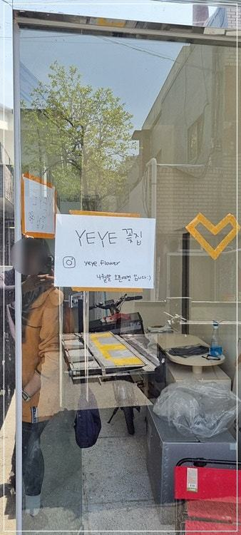
꽃냉장고 AS는 증상이 냉기 부족인지, 습도·결로 문제인지, 문과 조명 같은 부속 문제인지부터 나눠 보면 수리로 충분한지 판단하기 쉽습니다. 콤프레셔 고장이 반복되거나 매장 구성이 바뀌어 크기부터 맞지 않는다면 교체를 함께 검토하시는 편이 낫습니다.
안녕하세요. 꽃집 냉장 진열장을 맞춤으로 만드는 한성쇼케이스입니다.
꽃냉장고를 몇 년 쓰다 보면 어느 날 장미 끝이 유난히 빨리 마르거나, 유리 안쪽에 물방울이 맺혀 꽃이 잘 안 보이는 날이 찾아옵니다.
그때 사장님들이 가장 먼저 하시는 고민이 "이걸 고쳐서 더 쓸까, 이참에 바꿀까"입니다.
꽃은 하루만 상태가 나빠도 판매가 어려워지는 상품이라, 수리를 기다리는 시간 자체가 손실이 됩니다. 그래서 판단을 빨리 내리는 게 중요하죠.
오늘은 꽃냉장고 AS를 부르기 전에 직접 확인해 볼 증상과, 수리와 교체를 가르는 기준을 정리해 드리겠습니다.
1. AS 접수 전에 확인할 증상
꽃냉장고 이상은 크게 세 갈래입니다. 내부가 충분히 차가워지지 않는 냉기 문제, 유리에 물이 맺히거나 꽃잎에 물자국이 생기는 습도·결로 문제, 그리고 문이 덜 닫히거나 조명이 깜빡이는 부속 문제입니다.
어느 쪽인지에 따라 출동 기사님이 챙겨 올 부품이 달라집니다. 접수할 때 증상을 구체적으로 말씀해 주시면 한 번 방문으로 끝날 가능성이 커집니다.
- 증상이 시작된 날짜와 시간대를 메모해 두세요.
- 콤프레셔 소리가 평소와 다른지 들어 보세요.
- 유리 안팎 중 어디에 물이 맺히는지 확인하세요.
- 제품 명판의 모델명을 사진으로 찍어 두세요.
2. 수리로 충분한 경우
문 패킹이 갈라졌거나, 조명 안정기가 나갔거나, 온도 컨트롤러가 오작동하는 경우는 부품 교체로 해결되는 일이 많습니다.
꽃냉장고는 꽃 물통을 넣고 빼느라 문을 자주 여닫기 때문에 패킹과 경첩이 먼저 닳는 편입니다.
응축기에 먼지가 쌓여 냉기가 약해진 경우도 청소만으로 나아지기도 합니다. 꽃집은 포장지 부스러기와 잎 찌꺼기가 바닥에 많아 기계실 쪽으로 먼지가 빨려 들어가기 쉽습니다.
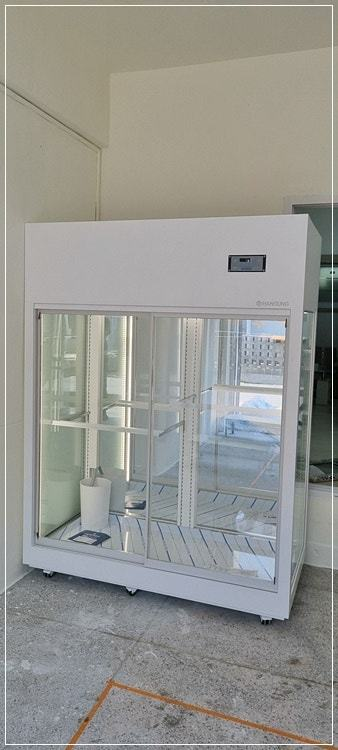
3. 교체를 함께 검토할 경우
콤프레셔나 냉매 배관 문제가 반복된다면 수리비가 쌓이는 속도를 따져 봐야 합니다. 성수기에 한 번 더 멈추면 그날 들여온 꽃을 통째로 잃을 수 있기 때문입니다.
매장 구성이 바뀐 경우도 교체 시점입니다. 처음엔 소품 위주였는데 화환과 대형 꽃다발 비중이 늘었다면 내부 높이가 모자라고, 꽃 물통을 넣기 불편해집니다.
이럴 땐 고쳐 쓰는 것보다 지금 매장에 맞는 높이와 폭으로 다시 맞추는 편이 운영이 편해집니다.
판단이 어렵다면 최근 몇 번의 수리 내용과 성수기 일정을 같이 놓고 보세요. 어버이날이나 졸업 시즌처럼 꽃이 가장 많이 들어오는 시기 직전이라면, 불안한 제품으로 버티기보다 비수기에 교체 일정을 잡아 두는 편이 손실을 줄이는 방법입니다.
교체를 결정하셨다면 기존 제품을 쓰면서 불편했던 점을 적어 두세요. 문 방향, 선반 높이, 조명 색처럼 사소해 보이는 불편이 새 제품 설계의 기준이 됩니다.
- 같은 증상으로 AS를 여러 번 받았는지 확인하세요.
- 지금 파는 꽃 길이에 내부 높이가 맞는지 보세요.
4. 고장을 줄이는 평소 관리
꽃 물통에서 넘친 물이 바닥판에 고이지 않게 매일 닦아 주시고, 시든 잎은 그날 걷어 내세요. 물기와 잎 찌꺼기가 배수구를 막으면 습도가 지나치게 올라가 곰팡이와 결로로 이어집니다.
유리 문을 열어 둔 채 작업하는 시간을 줄이는 것도 중요합니다. 꽃다발을 만들 땐 필요한 꽃을 한 번에 꺼내고 문을 닫아 두는 습관만으로 콤프레셔 부담이 줄어듭니다.
체크리스트
- 증상 구분: 냉기, 습도·결로, 부속
- 모델명 사진과 증상 시작 시점 메모
- 같은 고장 반복 여부
- 현재 판매 꽃 길이와 내부 높이
- 바닥판 물기와 배수구 청소
사이즈 체크부터 다시 한 상치형 꽃쇼케이스
꽃집을 운영하시는 대표님 의뢰로 제작한 상치형 꽃쇼케이스입니다. 매장에서 쓰실 높이와 넓이를 처음부터 꼼꼼히 확인하고, 꽃이 가장 보기 좋게 보이도록 내부 온도와 조명, 유리와 프레임 구성을 맞춰 설계했습니다.
제작은 자동화 공정에서 진행했고, 사용 중에 문제가 생기지 않도록 세부 마감까지 여러 번 확인하는 절차를 거쳤습니다.
대표님도 생산 과정부터 설치 마무리까지 직접 살펴보셨습니다.
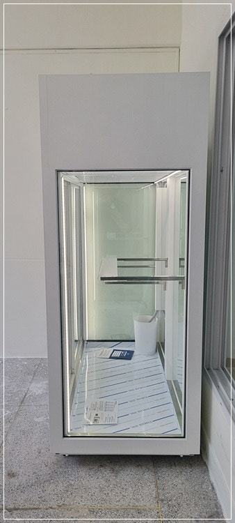
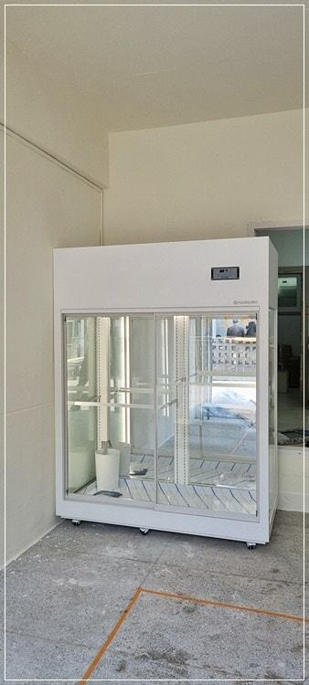
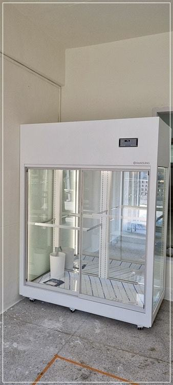
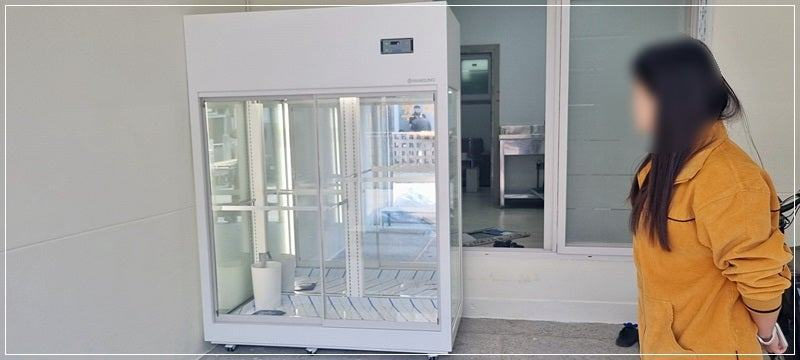
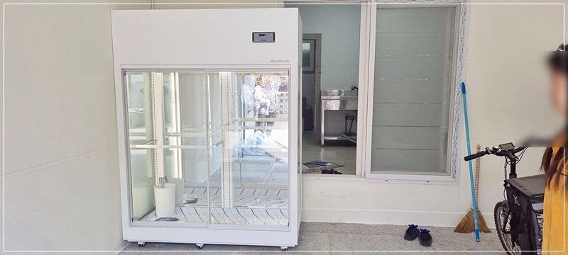
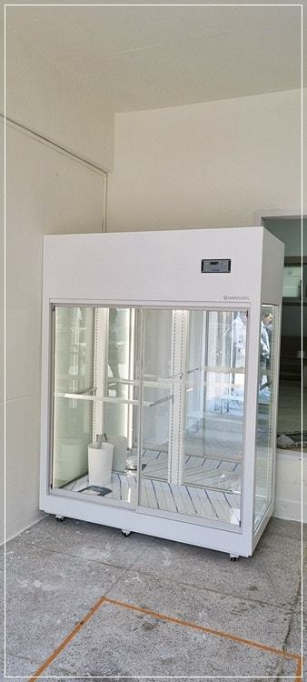
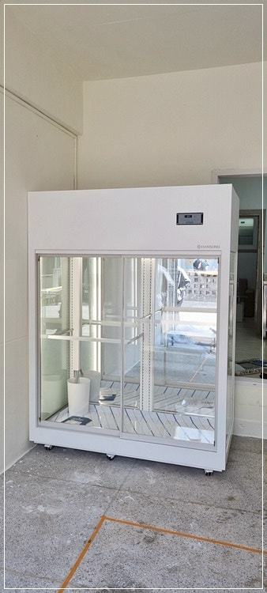
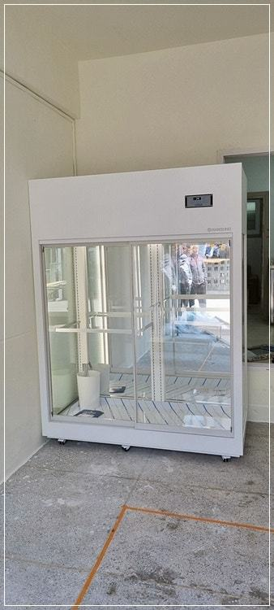
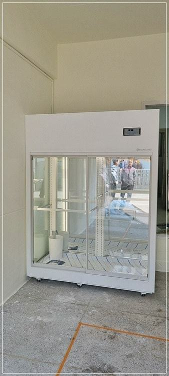

자주 묻는 질문
꽃냉장고 AS는 어떻게 접수하나요?
대표전화 031-986-2458로 모델명과 증상을 말씀해 주시면 됩니다. 한성쇼케이스는 전국 240여 개 A/S 센터를 운영하고 있어 가까운 센터에서 방문합니다.
다른 곳에서 산 꽃냉장고도 봐 주시나요?
제품 상태와 부품 수급 여부에 따라 달라집니다. 모델명과 증상 사진을 먼저 보내 주시면 수리 가능 여부를 확인해 안내해 드립니다.
유리에 물이 맺히는 건 고장인가요?
매장 습도가 높거나 문을 오래 열어 두면 생길 수 있는 현상입니다. 관리 습관을 바꿔도 계속된다면 결로 방지 기능이나 패킹 점검을 받아 보세요.
매장 조건에 맞춰 만드는 한성쇼케이스
원하시는 제품 사진과 설치할 공간 사진만 보내 주셔도 매장에 맞는 구성을 추천해 드립니다.
- 전국 240여 개 A/S 전담 센터 운영
- 본사 대량 자재 매입으로 품질 대비 합리적인 가격
- 유럽제·삼성 냉각 콤프레셔 적용
- 국내 최초 쇼케이스 전문 디자이너 상주
매장 폭과 원하는 진열 구성을 알려 주세요. 실측과 견적을 안내해 드립니다.
031-986-2458